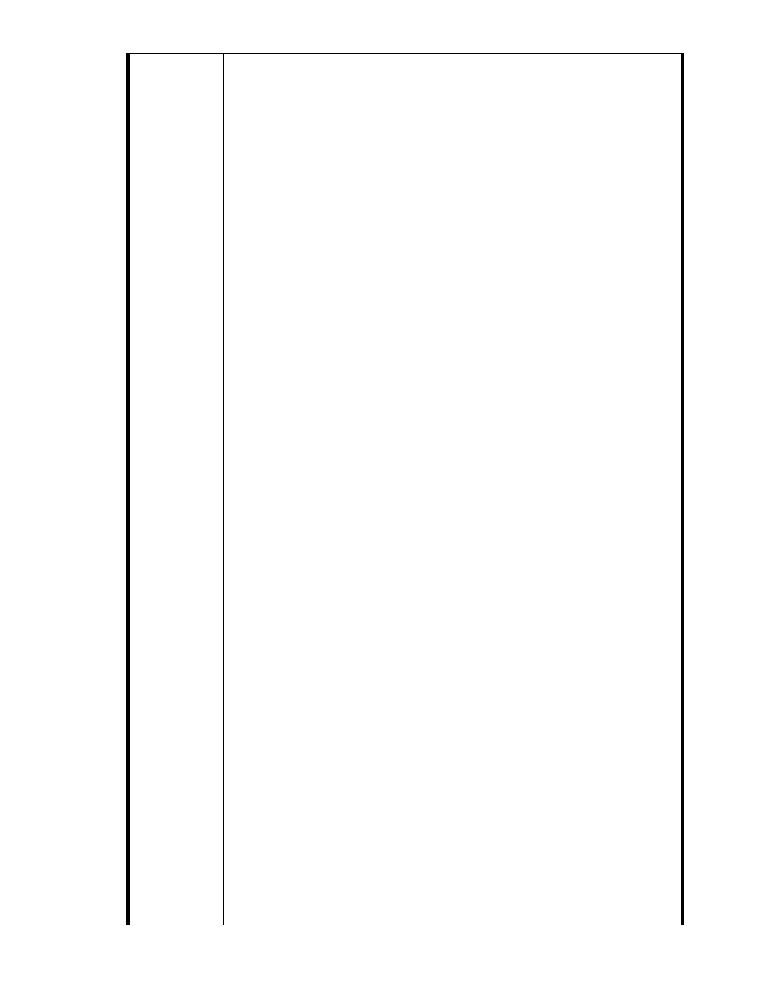

利特定專用區細部計畫案」書面發言意見
台灣蠻野心足生態協會陸詩薇律師
1 ．都市計畫審議委員會應具體認定，本件是否符合都市計畫法第 27 條
第 1 項第 3 款而得據以申請變更：
依照台北市政府 101 年 6 月《 變更台北市內湖區成功路五段大湖公園
北側部分保護區為社會福利特定專用區主要計畫案》 （下稱「主要計畫
書」），本件變更的法令依據是都市計畫法第 27 條第 1 項第 3 款：「都
市計畫經發布實施後，遇有左列情事之一時，當地直轄市、縣（市）（局）
政府或鄉· 鎮、縣轄市公所，應視實際情況迅行變更：三、為適應國防或
經濟發展之需要時。」
本件審議過程過程中，曾有許多意見質疑社會福利事業專用區與國防、
經濟並無關聯，也沒有迅行變更的需要。慈濟在 12 月 29 日的說明會中，
僅泛言慈濟推行「善經濟」、諸多國外的統計都認為 NGO 對於 GDP 總
值是有貢獻的、慈濟促進祥和且富而好禮的社會等等。然而，本案是否
符合上開法定要件，而具有變更的合法性，都市計畫審議委員會絕不能
輕描淡寫，以「善經濟」等抽象理論空泛支撐，必須在以下兩個法定要
件上為實質、具體、明確的認定，第一，是「本件變更案」確實是為適
應經濟發展需要；第二，「本件變更案」緊急、重大，符合迅行變更的
要件。
綜上，都市計畫審議委員會應具體、明確認定，本件為何符合都市計畫
法第 27 條第 1 項第 3 款之要件，方為適法。
2 ．本件由土地利害關係人申請主要計畫變更，於法無據：
都市計畫法第 24 條明文規定：「土地權利關係人為促進其土地利用，得
配合當地分區發展計畫，自行擬定或變更細部計畫，並應附具事業及財
務計畫，申請當地直轄市、縣（市）（局）政府或鄉、鎮、縣轄市公所
依前條規定辦理。
然而，本件台北市政府 101 年 6 月主要計畫書第 1 頁竟記載「申請單
位：財團法人中華民國佛教慈濟慈善事業基金會」，都市計畫法既規定
土地權利關係人僅可就「細部計畫」為變更申請，本件主要計畫之變更
竟是由慈濟發動，顯有違法。
3．本件應據實提供基地土地坡度達 5 ％以上之詳細總面積：
台北市政府 101 年 6 月主要計畫書表四「坡度分析表」記載：一級坡（平
均坡度≦5％ ）所佔百分比 77.66 %，然而圖五「坡度分析圖」卻記載：
- 293 -